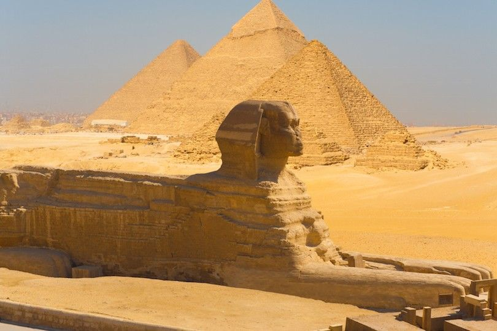

| MONUMENTOS |
DEFINICIÓN |
FOTO |
| ABU SIMBEL |
Es un yacimiento arqueológico que comprende dos enormes templos de roca
en el sur de Egipto, en la orilla occidental del lago Nasser. Los templos gemelos fueron
excavados originalmente en la ladera de la montaña durante el reinado del faraón Ramsés el
Grande en el siglo XIII a.C., como monumento duradero para él y su reina Nefertari. El complejo
fue trasladado en su totalidad en la década de 1960 para evitar que quedara sumergido durante la
creación del lago Nasser, el enorme embalse artificial formado tras la construcción de la Gran
Presa de Asuán en el río Nilo. |
|
| GRAN ESFINGE |
Es uno de los monumentos más grandes y antiguos del mundo, pero los
datos básicos sobre ella, como quién fue el modelo para la cara, cuándo se construyó y por
quién, siguen siendo objeto de debate. Es la mayor estatua monolítica del mundo, aunque es
considerablemente más pequeña que las pirámides que la rodean. A pesar de las pruebas y los
puntos de vista contradictorios a lo largo de los años, la opinión tradicional de los
egiptólogos modernos en general sigue siendo que la Gran Esfinge fue construida aproximadamente
en el año 2500 a.C. por el faraón Jafre |
 |
| KARNAK |
Es el mayor emplazamiento religioso antiguo del mundo y representa el
logro combinado de muchas generaciones de constructores egipcios. La mayor parte de las obras de
Karnak fueron realizadas por los faraones del Reino Nuevo (1570-1100 a.C.). El templo de Karnak
consta en realidad de tres templos principales, templos cerrados más pequeños y varios templos
exteriores situados a unos 2,5 kilómetros al norte de Luxor. Una de las estructuras más famosas
de Karnak es la Sala Hipóstila, una sala de 5.000 m2 con 134 enormes columnas dispuestas en 16
filas. |
|
| PIRAMIDE ESCALONADA DE DJOSER |
Fue la primera pirámide construida por los antiguos egipcios. Fue
construida durante el siglo XXVII a.C. para el entierro del faraón Djoser por su visir Imhotep.
El antiguo monumento comenzó como una mastaba tradicional de techo plano, pero al final del
reinado de Djoser se convirtió en una pirámide de seis niveles y tenía una altura de 62 metros.
Al igual que en las tumbas de mastaba anteriores, las cámaras funerarias de la Pirámide
Escalonada están bajo tierra, ocultas en un laberinto de túneles. |
|
| TEMPLO DE HATSHEPSUT |
Está situado bajo los acantilados de Deir el Bahari, en la orilla
occidental del Nilo. Se trata de una estructura con columnas, que fue diseñada y ejecutada por
Senemut, el arquitecto real de Hatshepsut, para que sirviera para su culto póstumo y para honrar
la gloria de Amón. El templo está construido en la pared de un acantilado que se eleva
bruscamente sobre él y consta de tres terrazas estratificadas que alcanzan los 30 metros de
altura. Estas terrazas están conectadas por largas rampas que antiguamente estaban rodeadas de
jardines. |
|
| VALLE DE LOS REYES |
Es un valle de Egipto en el que, durante un periodo de casi 500 años,
entre los siglos XVI y XI a.C., se construyeron tumbas para los reyes y nobles privilegiados del
Nuevo Reino. El valle contiene 63 tumbas y cámaras, que varían en tamaño desde una simple fosa
hasta una tumba compleja con más de 120 cámaras. Las tumbas reales están decoradas con escenas
de la mitología egipcia y dan pistas sobre las creencias y los rituales funerarios de la época.
Todas las tumbas parecen haber sido abiertas y robadas en la antigüedad. Sólo la famosa tumba de
Tutankamón se salvó de las peores depredaciones.
|
|